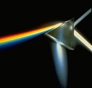
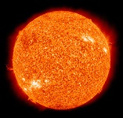

The Larsen Lab's research effort focuses on three efforts and spans both advancing fundamental research and technological applications of light initiated dynamics of condensed phase systems and understanding how students effectively use online classroom resources to improve education in post-secondary courses. The Larsen Labs's effort includes the application of advanced transient studies on novel systems with the goal of characterizing and directing the fundamental mechanisms involved in effective photochemical transformation in biological and manmade materials applications. Complementing these two experimental research lines is an open access resource (OER) research effort of building the LibreTexts (formerly ChemWiki) as an Open online resource and learning how students can use it effectively.
PhotoBiology PhotoEnergy Education Research